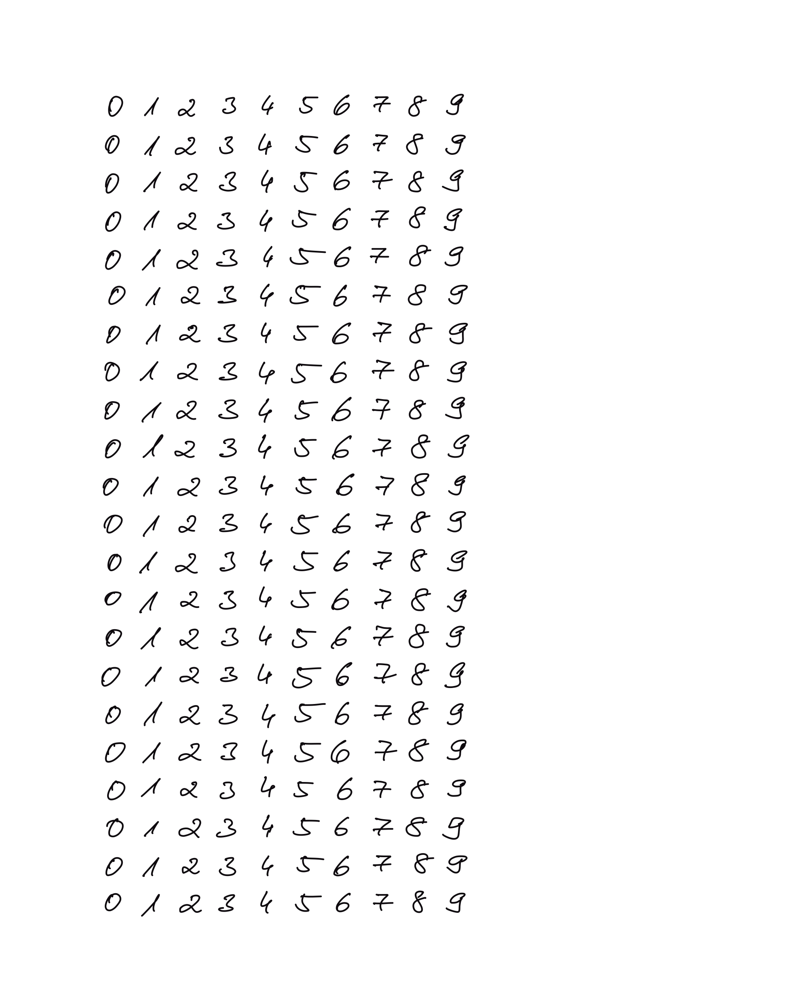
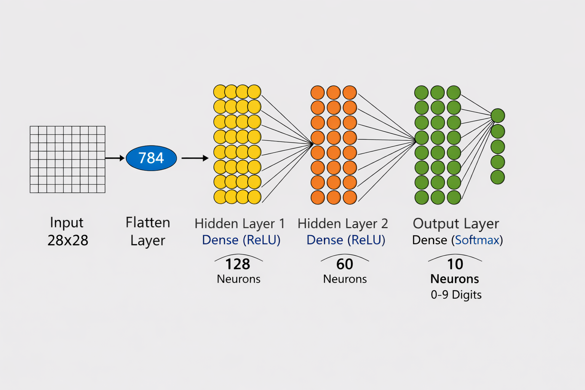
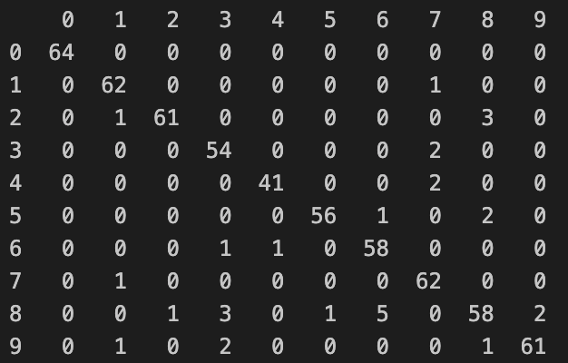

Überwachtes Lernen wird im Folgenden anhand eines einfachen und anschaulichen Beispiels erläutert: der Erkennung handgeschriebener Ziffern. Zu diesem Zweck wird zunächst ein eigener Trainingsdatensatz aus handgeschriebenen Zahlen erstellt. Ausgangspunkt sind sortierte Bilddaten der Ziffern von 0 bis 9. Die einzelnen Ziffern werden aus dem Dokument extrahiert, den jeweiligen Zahlenklassen zugeordnet und in Arrays gespeichert. Um die Datenmenge überschaubar zu halten und den Rechenaufwand zu reduzieren, werden die Bilder der einzelnen Ziffern auf eine einheitliche Größe von 28 × 28 Pixeln skaliert. Für die eigentliche Bilderkennung werden nicht die Farbbilder selbst verwendet. Stattdessen werden die Farbkanäle zunächst in Graustufen umgewandelt und anschließend die Konturen der Ziffern extrahiert. Diese reduzierte und abstrahierte Darstellung dient schließlich als Eingabe für ein neuronales Netz, das mithilfe der zugehörigen Klassenlabels trainiert wird.

Beispiel einer Handschriftprobe von sortierten Zahlen im Raum 0 bis 9
1.1 Aufgabe 1: Erstellen von Trainingsdaten
Erstellen Sie ihren eigenen Satz von Trainingsdaten nach dem oben dargestellten Beispiel. Speichern Sie die Datei unter dem Namen ‘Zahlen_Handschrift_sortiertXX.png’ und senden Sie das Bild an die Kursleitung. Das XX ist dabei eine laufende Nummer (beginnend mit 15). Stimmen Sie sich bezüglich der Nummer mit der Kursleitung ab.
Hinweis:
Achten Sie beim Zahlen schreiben darauf, dass die Zahlen jeweils aus einer zusammenhängenden Linie bestehen. Lücken innerhalb einer Zahl machen das Erkennen der Konturen ungleich aufwändiger. Dies wäre eine schöne Erweiterung nach Abschluss der ersten Zahlenerkennung.
Aus den gesammelten Daten kann nun der Trainingsdatensatz erstellt werden.
2 Einlesen und Sortieren der Trainingsdaten
Code anzeigen
import numpy as npimport matplotlib.pyplot as pltfrom glob import globimport reimport cv2# Funktion zur numerischen Sortierung der Dateiendef extract_number(filename):returnint(re.search(r"_sortiert(\d+)", filename).group(1))# Alle Files einleden, die mit Zahlen_Handschrift_sortiert beginnen und direkt darauf folgend eine Zahl im Namen haben.liste_daten = glob('Daten/UeberwachtesLernen/Zahlen_Handschrift_sortiert*[0-9].png')# Liste numerisch sortieren und sortierte Liste ausgebenliste_daten =sorted(liste_daten, key=extract_number)for el in liste_daten:print(el)
Im nächsten Schritt werden die einzelnen Zahlen aus den Bildern herausgelesen.
Dazu wir mit der zuvor erstellten Liste der Bilddateien jedes Bild
eingelesen,
in ein Graustufenbild umgewandelt
mit einem Gauß-Filter geglättet, um Bildrauschen zu reduzieren.
Danach wird eine adaptive Schwellwertmethode angewendet, um ein binäres Bild zu erzeugen, in dem die Ziffern klar vom Hintergrund getrennt sind.
Anschließend werden die Konturen der Ziffern im Bild gesucht. Konturen mit zu kleiner Fläche oder zu geringer Höhe werden verworfen, um Störungen und Rauschen zu eliminieren. Für die verbleibenden Konturen werden rote Rechtecke in das Originalbild eingezeichnet, sodass die erkannten Ziffern visuell kontrolliert werden können.
Die gültigen Konturen werden danach in einer festen Reihenfolge (von oben nach unten und von links nach rechts) sortiert. Für jede erkannte Ziffer wird der entsprechende Bildausschnitt (Region of Interest) ausgeschnitten, auf eine Größe von 28 × 28 Pixeln skaliert und in einer Liste gespeichert. Parallel dazu wird die Anzahl der erkannten Ziffern gezählt und zur Erzeugung der passenden Klassenlabels verwendet.
Am Ende werden alle Bilddaten in ein NumPy-Array überführt und die zugehörigen Zielwerte in einem eindimensionalen Label-Array zusammengefasst, das für das Training eines überwachten Lernverfahrens genutzt werden kann.
Zuvor werden hierzu zwei Hilfsfunktionen definiert, die Funktion imshow und die Funtion sort_contours_grid:
Die Funktion imshow dient zur komfortablen Anzeige von Bildern innerhalb eines Notebooks. Sie überprüft zunächst, ob das Bild ein Farbbild im OpenCV-typischen BGR-Format ist, und wandelt es gegebenenfalls in das RGB-Format um, damit es mit Matplotlib korrekt dargestellt wird. Anschließend wird die Bildgröße dynamisch an das Seitenverhältnis angepasst, das Bild angezeigt, mit einem Titel versehen und die Achsen ausgeblendet. Dadurch lassen sich Bilder unabhängig von ihrer Auflösung übersichtlich visualisieren.
Die Funktion sort_contours_grid sortiert eine Liste von OpenCV-Konturen in einer logischen Lese-Reihenfolge. Zunächst werden zu jeder Kontur die umschließenden Rechtecke bestimmt. Die Konturen werden dann zuerst nach ihrer vertikalen Position sortiert, sodass sie von oben nach unten angeordnet sind. Anschließend werden die Konturen anhand ihrer y-Koordinate zu Zeilen gruppiert, wobei der Parameter row_height bestimmt, ab welchem vertikalen Abstand eine neue Zeile beginnt. Innerhalb jeder Zeile werden die Konturen schließlich von links nach rechts sortiert.
Das Ergebnis ist eine Liste von Konturen, die in der gleichen Reihenfolge angeordnet sind, wie ein Mensch sie beim Lesen eines Gitters oder Dokuments wahrnehmen würde, was insbesondere für die korrekte Zuordnung von Ziffern oder Zeichen zu ihren Labels wichtig ist.
2.1 Hilfsfunktionen definieren
Code anzeigen
def imshow(name, img, size=8):import matplotlib.pyplot as pltfrom IPython.display import displayimport cv2# Convert BGR to RGBiflen(img.shape) ==3and img.shape[2] ==3: img = cv2.cvtColor(img, cv2.COLOR_BGR2RGB) h, w = img.shape[:2] aspect = w / h plt.figure(figsize=(size * aspect, size)) plt.imshow(img, cmap='gray'iflen(img.shape) ==2elseNone) plt.title(name) plt.axis('off')#plt.show()# contours are not sorted, so sort them to assign the correct labels laterdef sort_contours_grid(contours, row_height=50):# Extract bounding boxes bounding_boxes = [cv2.boundingRect(c) for c in contours]# Combine contours with their boxes contours_with_boxes =list(zip(contours, bounding_boxes))# First sort top-to-bottom by y contours_with_boxes.sort(key=lambda b: b[1][1]) # b[1][1] = y# Group contours into rows based on y rows = [] current_row = [] last_y =-row_heightfor c, (x, y, w, h) in contours_with_boxes:if y - last_y > row_height:if current_row: rows.append(current_row) current_row = [(c, (x, y, w, h))] last_y = yelse: current_row.append((c, (x, y, w, h)))if current_row: rows.append(current_row)# Now sort each row left to right sorted_contours = []for row in rows: row.sort(key=lambda b: b[1][0]) # sort by x sorted_contours.extend([c for c, _ in row])return sorted_contours
2.2 Konturen erkennen
Code anzeigen
contour_height =23x_data_list = []response_list = []## Für die bessere Übersicht im Skript werden hier nur die ersten zwei Bilder ausgewertet. Wenn alle Bilder ausgewertet werden sollen, kommende Zeile auskommentieren und die alternative for-Schleife reinnehmen.#for im in liste_daten[:2]:## Alle Bilder auswertenfor im in liste_daten:print(im) image = cv2.imread(im) gray = cv2.cvtColor(image,cv2.COLOR_BGR2GRAY) blur = cv2.GaussianBlur(gray,(5,5),0) thresh = cv2.adaptiveThreshold(blur,255,1,1,11,2)# find digits in image and create contours contours, hierarchy = cv2.findContours(thresh, cv2.RETR_EXTERNAL, cv2.CHAIN_APPROX_SIMPLE) no_digits =0 plt.figure(figsize = (10,15)) plt.imshow(image, cmap='gray') plt.title(im)# jetzt rotes Viereck um jede Zahl zeichnenfor cnt in contours:if cv2.contourArea(cnt) >50: x, y, w, h = cv2.boundingRect(cnt)if h > contour_height: no_digits +=1 plt.gca().add_patch(plt.Rectangle((x, y), w, h, edgecolor='red', facecolor='none', linewidth=2))#Sortieren der Konturen von oben nach unten und links nach rechts contours = sort_contours_grid(contours)for cnt in contours:# print(cv2.contourArea(cnt))if cv2.contourArea(cnt) >50: x, y, w, h = cv2.boundingRect(cnt)if h > contour_height: roi = thresh[y:y+h, x:x+w] roismall = cv2.resize(roi, (28, 28)) x_data_list.append(roismall)# now generate labelsprint(no_digits, no_digits/10)# create list of labels list_of_digits = [0,1,2,3,4,5,6,7,8,9]for element inrange(int(no_digits/10)): response_list.append(list_of_digits)#finalize the datax_data = np.array(x_data_list)response = np.array(response_list)y_data = response.flatten()
# Zahl ändern, um beliebige Schrift und Label-Kombination zu prüfennumber =200x_data = np.array(x_data)print(x_data)print(x_data.shape)plt.imshow(x_data[number], cmap='gray')plt.title(f"Label: {y_data[number]}")plt.axis('off')
Dazu werden die Inputdaten und Zielwerte zunächst gemeinsam zufällig gemischt, sodass die ursprüngliche Reihenfolge der Daten keine Rolle mehr spielt. Anschließend wird der Datensatz im Verhältnis 80 % zu 20 % in einen Trainings- und einen Testdatensatz aufgeteilt.
Zum Schluss werden die Daten in einem gezippten Container-Format für mehrere NumPy-Arrays (einem .npz-Array) gespeichert. .npz ist ein kompaktes, effizientes Archivformat für mehrere NumPy-Arrays und eignet sich besonders für Trainings- und Testdaten in Machine-Learning-Anwendungen.
Code anzeigen
import numpy as npdef split_array_randomly(x_arr, y_arr, train_ratio=0.8, seed=None):if seed isnotNone: np.random.seed(seed)try: x_arr.shape[0] == y_arr.shape[0]print('ja')except:print('shape of arrays does not match') # Generate shuffled indices indices = np.random.permutation(len(x_arr)) split_point =int(len(x_arr) * train_ratio) train_idx = indices[:split_point] test_idx = indices[split_point:] train_idy = indices[:split_point] test_idy = indices[split_point:]return x_arr[train_idx], x_arr[test_idx], y_arr[train_idx], y_arr[test_idx]x_train, x_test, y_train, y_test = split_array_randomly(x_data, y_data)print(x_train.shape)print(x_test.shape)print(y_train.shape)print(y_test.shape)np.savez('output/handwrittendigits.npz', array1=x_train, array2=x_test, array3=y_train, array4=y_test)
ja
(2432, 28, 28)
(608, 28, 28)
(2432,)
(608,)
Die Normalisierung der Bilddaten erfolgt, indem alle Pixelwerte durch 255 dividiert werden. Da Graustufenbilder Pixelintensitäten im Bereich von 0 bis 255 besitzen, werden die Werte durch diese Skalierung in den Bereich von 0 bis 1 überführt. Dadurch bleiben die relativen Helligkeitsunterschiede der Bilder erhalten, während die numerische Größenordnung der Eingabedaten deutlich reduziert wird.
Diese Normalisierung ist wichtig, weil neuronale Netze mit kleinen, vergleichbaren Zahlenwerten effizienter und stabiler lernen. Große Eingangswerte können zu instabilen Gradienten und langsamem oder fehlerhaftem Training führen. Durch die Skalierung der Pixelwerte wird der Lernprozess beschleunigt, numerische Probleme vermieden und die Konvergenz des Modells verbessert.
Das Model hat folgenden Aufbau

Aufbau des Neuronalen Netzes zu Handschrifterkennung
Es folgt einem Aufbau, der sich für die Erkennung von Zahlen bewährt hat (P.Frey, D.Slate, Letter Recognition Using Holland-Style Adaptive Classifiers, Machine Learning, 6, 161-182 (1991)).
Das mehrschichtiges Perzeptron also mit einer Eingabeschicht für 28 × 28 Pixel große Bilder, zwei versteckten Schichten mit ReLU-Aktivierungsfunktion und einer Ausgabeschicht mit zehn Neuronen und Softmax-Aktivierung definiert.
Das Modell wird mit dem Adam-Optimierer und der Verlustfunktion für mehrklassige Klassifikation kompiliert und anschließend über mehrere Epochen (epochs=100 –> 100 Epochen) trainiert, wobei ein Teil der Trainingsdaten (validation_split=0.3 –> also 30%) zur Validierung verwendet wird. Der Trainingsverlauf wird anhand von Verlust und Genauigkeit mit matplotlib visualisiert. Nach dem Training wird das Modell mit einem separaten Testdatensatz evaluiert, um die Generalisierungsleistung zu überprüfen. Abschließend werden Klassenvorhersagen berechnet und in Form einer Konfusionsmatrix dargestellt, die zeigt, wie gut die einzelnen Ziffernklassen vom Modell unterschieden werden.
Code anzeigen
import tensorflow as tfimport pandas as pd# Normalize the pixel values by dividing each pixel by 255 x_train, x_test = x_train /255.0, x_test /255.0# Build the 4-layer neural networkmodel = tf.keras.models.Sequential([tf.keras.layers.Flatten(input_shape=(28, 28)), # 28x28 Pixel in Vektor konvertierentf.keras.layers.Dense(128, activation='relu'), # Fully Connected Layertf.keras.layers.Dense(60, activation='relu'), # Fully Connected Layertf.keras.layers.Dense(10, activation='softmax') # Fully Connected Layer])# Compile the model and set optimizer, loss function, and metrics# Sollten wir hier für loss einfach MSE verwenden (weil wir es bisher auch gemacht haben?)# nur für msey_train = tf.keras.utils.to_categorical(y_train, 10)y_test = tf.keras.utils.to_categorical(y_test, 10)model.compile(optimizer='adam', loss='mse', metrics=['accuracy'])#model.compile(optimizer='adam', loss='sparse_categorical_crossentropy', metrics=['accuracy'])# Finally, train or fit the model (with reduced output)trained_model = model.fit(x_train, y_train, validation_split=0.3, epochs=100, verbose=2)# Visualize loss and accuracy history# log darstellenplt.plot(trained_model.history['loss'], 'r--')plt.plot(trained_model.history['accuracy'], 'b-')plt.legend(['Training Loss', 'Training Accuracy'])plt.xlabel('Epoch')plt.ylabel('Percent')plt.yscale('log')# Evaluate the result using the test setevalResult = model.evaluate(x_test, y_test, verbose=1)print("Evaluation", evalResult)predicted = model.predict(x_test)predicted_df = pd.DataFrame(predicted)print("Probabilities of all classes predicted from the model:")print(predicted_df.head(10))print("Predicted class based on the highest probability:")predicted_df.idxmax(axis=1)print("===Confusion Matrix==")#confusion = tf.math.confusion_matrix(y_test, np.argmax(predicted, axis=1), num_classes=10)# falls mseconfusion = tf.math.confusion_matrix(np.argmax(y_test, axis=1),np.argmax(predicted, axis=1),num_classes=10)tf.print(confusion)tensor_values = confusion.numpy()confusion_df = pd.DataFrame(tensor_values)print(confusion_df)
Die Grafik zeigt den Trainingsverlauf des neuronalen Netzes über die Epochen und stellt dar, wie sich Verlustfunktion und Klassifikationsgenauigkeit während des Lernprozesses entwickeln. Auf der x-Achse ist die Anzahl der Trainingsdurchläufe (Epochen) abgetragen, während die y-Achse den Wert der jeweiligen Kenngröße in logarithmischer Skalierung darstellt.
Die rote, gestrichelte Kurve repräsentiert den Training Loss, also den Fehler des Modells auf den Trainingsdaten. Zu Beginn des Trainings ist der Fehler noch hoch, nimmt jedoch bereits nach wenigen Epochen stark ab. Im weiteren Verlauf sinkt der Loss kontinuierlich weiter und nähert sich sehr kleinen Werten an. Dies zeigt, dass das Modell die Trainingsdaten zunehmend besser approximiert und die Vorhersagen immer genauer werden.
Die blaue, durchgezogene Kurve zeigt die Training Accuracy, also den Anteil korrekt klassifizierter Trainingsbeispiele. Bereits nach wenigen Epochen steigt die Genauigkeit stark an und erreicht nahezu 100 %. Anschließend bleibt sie über den restlichen Trainingsverlauf hinweg auf einem konstant hohen Niveau, was darauf hinweist, dass das Modell die Trainingsdaten sehr zuverlässig erkennt.

Konfusionsmatrix des trainierten Models zur Erkennung von Handgeschriebenen Zahlen.
Die Konfusionsmatrix gibt einen detaillierten Überblick darüber, wie gut das neuronale Netz die handgeschriebenen Ziffern im Testdatensatz erkennt. Dabei entsprechen die Zeilen den tatsächlichen Ziffernklassen (Ground Truth), während die Spalten die vom Modell vorhergesagten Klassen darstellen. Jeder Eintrag in der Matrix beschreibt, wie oft eine Ziffer einer bestimmten Klasse als eine andere – oder als die richtige – Klasse klassifiziert wurde.
Die Werte auf der Hauptdiagonalen der Matrix stehen für korrekt erkannte Ziffern. Diese Diagonale dominiert deutlich, was zeigt, dass das Modell den Großteil der Testdaten richtig klassifiziert. So wurden beispielsweise alle vorhandenen Nullen korrekt als „0“ erkannt, und auch die meisten anderen Ziffern wie Einsen, Zweien, Siebenen oder Neunen wurden jeweils über 60-mal korrekt klassifiziert. Dies weist auf eine insgesamt sehr hohe Erkennungsgenauigkeit des Modells hin.
Die Einträge außerhalb der Diagonalen kennzeichnen Fehlklassifikationen und machen sichtbar, bei welchen Ziffern das Modell Schwierigkeiten hat. So wurden einige Zweien fälschlicherweise als Achten erkannt, was auf ähnliche geschlossene oder geschwungene Formen in der Handschrift hindeuten kann. Ebenso zeigt die Matrix, dass Achten relativ häufig mit Sechsen verwechselt werden, da beide Ziffern in handgeschriebener Form ähnliche Rundungen aufweisen. Weitere, wenn auch seltene Verwechslungen treten beispielsweise zwischen Dreien und Siebenen auf, was auf ähnliche Strichführungen zurückzuführen sein kann.
Die Zeilensummen der Matrix geben außerdem Auskunft über die Anzahl der Testbeispiele pro Klasse. Diese sind relativ gleichmäßig verteilt, sodass keine Ziffer im Testdatensatz stark über- oder unterrepräsentiert ist. Dadurch ist die Aussagekraft der Matrix besonders hoch.
Insgesamt zeigt die Konfusionsmatrix nicht nur die hohe Gesamtleistung des neuronalen Netzes, sondern liefert auch wertvolle Informationen über die verbleibenden Fehler. Sie macht deutlich, welche Ziffern besonders zuverlässig erkannt werden und bei welchen Klassen aufgrund visueller Ähnlichkeiten noch Verbesserungen möglich sind, beispielsweise durch den Einsatz komplexerer Modelle oder zusätzlicher Trainingsdaten.
Um das trainierte Netzwerk später auch auf anderen Computern nutzen zu können, lässt es sich praktischerweise speichern.
Code anzeigen
print(type(x_test), x_test.shape)#now save the trained model for later usemodel.save("output/my_model.keras")
4 Abschlussprojekt Überwachtes Lernen: Zahlenerkennung einer digitalen Waage